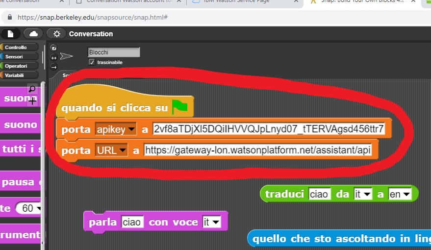

Conversation Watson account tutorial
Creare un account
-
Vai al sito
console.bluemix.net
-
Clicca su "Create an account"

-
Compila tutti i campi e premi "continua"
-
Ora torna su
console.bluemix.net e inserisci la tua mail e la tua password
Aggiungere la risorsa Watson Assistant
-
Partiamo dalla "dashboard" (pannello di controllo), ovvero la pagina principale raggiunta subito dopo il login al sito
console.bluemix.net
-
Cliccare su "Create Resource" in alto a destra per aggiungere una nuova risorsa

-
Nel menu laterale a sinistra selezionare la categoria AI e poi cliccare su "Watson Assistant"
-
Attendere che la pagina sia pronta e appena possibile cliccare sul bottone "Create" in basso a destra

-
Ora è possibile copiare apikey e URL cliccando sulle piccole icone a destra, come evidenziato nell'immagine qui sotto

-
Una alla volta, copiare apikey e URL sul proprio progetto SNAP!
